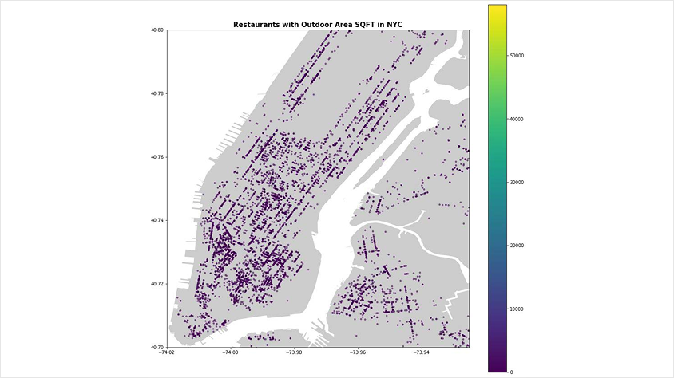
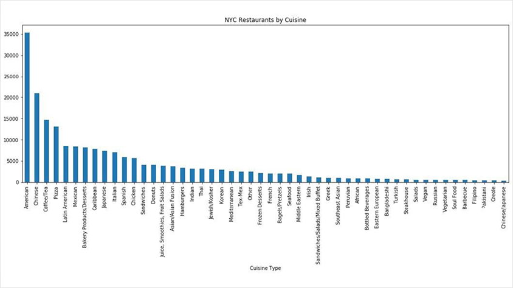

Data-Driven Lead Generation - Metal Fabricator
A metal fabricator saw an opportunity in New York City’s outdoor dining market but needed a way to identify the most relevant prospects. Autokatalyst combined geographic, physical, and commercial data to build a targeted lead-generation system, identifying 13,000+ restaurants across five boroughs and structuring ~8 million data points to help surface and prioritize potential opportunities.

The opportunity
New York City’s outdoor dining market represented a significant opportunity for the client. The challenge was identifying which restaurants had the right characteristics to become relevant prospects.
Rather than treating every restaurant equally, Autokatalyst built a detailed view of the market to surface and prioritize the strongest opportunities.
Restaurants identified across all five NYC boroughs
13,000+
Data points collected and structured
~8 million
“The question isn’t where AI can be applied. It’s what would materially improve the business — and what’s the best way to accomplish it.”-John Smith
What we did
Autokatalyst combined geographic, physical and commercial data to build detailed profiles of potential prospects.
Signals included location, available sidewalk and roadway space, outdoor seating, licensing, restaurant characteristics and other relevant attributes.
This transformed a broad market into a structured, actionable prospect base.


The Results
A clearer path to the right opportunities.
The client gained a data-driven foundation for identifying and prioritizing restaurants based on their relevance and potential — enabling a more targeted approach to lead generation.
Email Open Rate
76%
Email Repeat Open Rate
39%
On-Site Meetings
3%
Quotes Sent
3%
Outreach to On-Site Meeting
~1 week
Outreach to Quote
~2 weeks